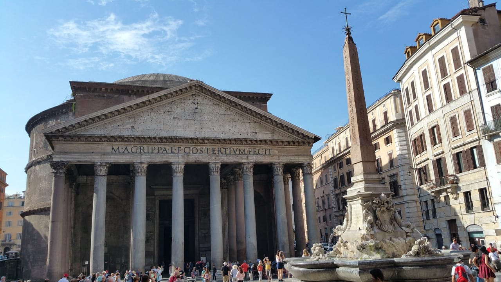

Imperiul Roman a lăsat în urma sa o moștenire grandioasă privind instituțiile, cultura, limbile, religia, arta, arhitectura, filosofia, dreptul și știința. Ulterior, moștenirea romană a influențat debutul Renașterii, arhitectura neoclasică, codurile legislative moderne și formarea republicilor moderne precum Franța și Statele Unite ale Americii. Limba latină răspândită în teritoriile cucerite de romani, precum și creștinarea, a dus la apariția regatelor medievale și a statelor moderne de azi precum Franța, Spania, Italia, Portugalia și România. Adoptarea creștinismului a condus la formarea bisericii creștine care a dominat Europa pe durata Evului Mediu.
Civilizația și cultura romană a asimilat vechile civilizații mediteraneene, experientele etruscilor în construcții , tehnici și materiale , ca și tradițiile grecești si ale popoarelor din Asia Mica, impunându-se lumii antice ca o civilizație unitară .
Pentru a administra mai usor vastul imperiu, romanii au construit sosele de piatra, poduri trainice, apeducte, viaducte, terme, temple, stadioane etc.
Roma a lasat moștenire posterității opere de artă de o valoare inestimabilă . Monumentele numeroase , rămase din timpul civilizatâției romane, arăta marea varietate de forme ale construcțiilor romane. Scara și proporțiile monumentale, impresionantele concepții ale bazilicilor, ale termelor și monumentelor funerare, noua tehnică constructivă a arcurilor și boltilor, construcția rezervoarelor, a podurilor, a apeductelor și viaductelor, a șoselelor, a arcurilor de triumf, fac din arhitectura romană " o enciclopedie morfologic a arhitecturii ". Construcțiile romane ilustrează mareția , grandoarea și autoritatea republicii și a Imperiului , sentimentul de supremație al romanilor asupra lumii .
Romanii au construit forumuri pretutindeni unde armatele victorioase au rămas și au trait ca forțaâă de ocupație , din vestul pânaâă în estul continentului european , pânî în Asia Mica sau nordul Africii . Dintre toate însă , ansamblul forumurilor imperiale din Roma rămâne cel mai impresionant . Bazilica, în lumea romană, era o construcție care servea ca tribunal , curte de justiție sau bursă. Mari construcții cu vaste săli de reuniuni având spațiile interioare împarțite prin coloane ți porticuri, bazilicile erau locul unde se întâlneau bancherii , negustorii, oamenii de afaceri. Bazilica Emiliana , care era curte de justiție, sau Bazilica Giulia, ridicată de Cezar, sunt reprezentative pentru clădirile elegante , bogate în coloane și sculpturi din marmură.
Amfiteatrul - Colosseum-ul inaugurat în anul 80 (în vremea lui Titus Flavius), este numit și amfiteatrul Flavian. Este considerat cel mai mare amfiteatru roman. Avea o arenă imensă iar subsolul era ocupat de magazine, cuști cu animale salbatice, cabine ale gladiatorilor. În arenă aveau loc luptele oamenilor cu animale, dueluri între gladiatori, curse, etc. Colosseum-ul îmbina trei stiluri arhitectonice clasice: doric, ionic si corintic . El simbolizează continuitatea istorică a vieții Romei în decursul secolelor.
Bazilica Aemilia- prezent

Rețeaua de drumuri ale romanior

Pateonul Roman-Casa zeilor